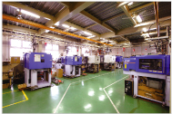
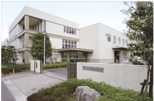
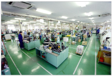
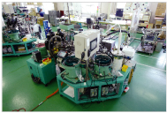
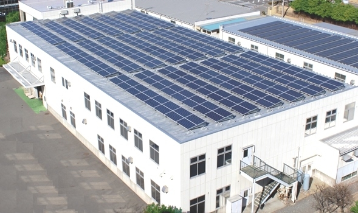

情報通信用ネットワーク接続機器メーカー
家の壁の、
その先をつくる。
光ファイバーが部屋に入ってくる、その一番端にある小さな部品。光コンセント、ローゼット、端子板。八光電機製作所は昭和26年の設立以来、通信をつなぐための接続機器をつくり続けてきた専門メーカーです。
日本電信電話公社の指定メーカーとなったのが昭和28年。以来70年以上、NTT グループをはじめ多くのお客様に納めています。製造は埼玉県吉川市、東埼玉テクノポリス内の自社工場です。

- 1933野原製作所として開業
- 1951株式会社設立（昭和26年）
- 34社主要取引先
- 100kW吉川工場の太陽光発電
製品ラインアップ
つないで、守って、
分けるための部品。
光、LAN、電話。回線の種類ごとに、屋内側の端末に必要な接続機器を揃えています。障害対策の製品や、成形・プレスの受託も手がけています。
光
光接続機器
- 光コンセント
- 光ローゼット／光コード／タグ
- 光ケーブル配線カバー
- 心線接続用コネクタ
LAN
LAN関連製品
- LAN用コンセント
- LAN用ローゼット
- LAN関連製品
電話
電話回線用接続機器
- 電話用コンセント（NMJ）
- 電話用ローゼット
- 端子板（N10-）
- IP電話対応マルチ端子板
- マルチ端子板
その他
障害対策・受託製造
- EMCノイズフィルタ ほか
- 中継コネクタ／分岐コネクタ
- 射出成形製品
- プレス加工部品
製品のご購入は取扱商社を通じてのお取り扱いとなります。まずは営業部までご相談ください。
吉川工場
東埼玉テクノポリスで、
つくっています。
昭和44年に吉川町へ工場を建て、平成9年に東埼玉テクノポリス内へ新工場を建設しました。成形から組立、測定・検査までを一つの敷地で行っています。
- 01
射出成形機
樹脂部品を成形します。工場の入口にあたる工程です。
- 02
セル生産方式
少人数で一貫して組み立てる方式。品種の切り替えに強い作り方です。
- 03
専用自動組立機
数の出る品番は専用機で組みます。
- 04
自動組立ライン
量産品はラインで流します。
- 05
測定・検査
出荷前に寸法と機能を確認します。

吉川工場 外観
組立フロア
専用自動組立機
- 所在地
- 〒342-0008 埼玉県吉川市旭3-7（東埼玉テクノポリス地区内）
- 営業
- Tel. 048-940-8685 ／ Fax. 048-940-2075
- 製造
- Tel. 048-993-1285 ／ Fax. 048-993-1785
環境への取り組み
屋根に336枚。
吉川工場の屋根で太陽光発電を行っています。CO2 削減の取り組みの一環で、2014年1月21日に発電を開始しました。設計・施工は株式会社NTTファシリティーズです。

- 発電能力
- 100 kW
- 年間発電量
- 10万 kWh／年
- CO2 削減量
- 52 t／年
- 太陽電池パネル数
- 336 枚
- 発電開始日
- 2014年1月21日
- 設計・施工
- 株式会社NTTファシリティーズ
CO2 削減量は適用排出係数 521.4 g-CO2/kWh による算出値です。
認証・規制対応
- ISO 9001平成9年6月 認証取得
- ISO 14001平成11年9月 認証取得
- RoHS 指令平成18年10月 全製品鉛フリー化により準拠
- 認定工場昭和60年2月 日本電信電話公社 ジャック式ローゼット認定工場
沿革
電話機部品から、
光ファイバーまで。
昭和8年に電話機部品の製造から始まり、国鉄、電電公社、NTT と、通信インフラの変化に合わせて製品を変えてきました。以下は主な出来事です。
- 昭和8年1933
野原製作所を開業、電話機部品を製造。
- 昭和26年1951
株式会社八光電機製作所を設立。翌6月、日本国有鉄道と取引開始（車両用電機器具）。
- 昭和28年1953
日本電信電話工業協同組合に設立と同時加入。日本電信電話公社指定メーカーとなり端子板を製造。
- 昭和41年1966
東京都荒川区西日暮里に本社ビル建築。
- 昭和44年1969
埼玉県北葛飾郡吉川町に新工場建築。
- 昭和60年1985
日本電信電話公社ジャック式ローゼット認定工場となる。4月よりNTTへ納入開始。
- 平成4年1992
NTT に NMJ の納入開始。
- 平成5年1993
「ジャック式ローゼットの改良・開発」の功により、NTT社長より感謝状を授与される。
- 平成9年1997
東埼玉テクノポリス内に新工場建設。6月、ISO9001 認証取得。
- 平成11年1999
ISO14001 認証取得。12月、大阪市に西日本営業所を開設。
- 平成13年2001
東京都中央区日本橋に本社を移転。
- 平成16年2004
光コンセントの販売開始。
- 平成18年2006
「ジャック式ローゼットの六価クロムフリー化」の功によりNTT東西より感謝状。10月、全製品鉛フリー化によりRoHS指令に準拠。
- 平成19年2007
NTT に ドロップホルダ、光ローゼット の納入開始。
- 平成20年2008
「SC固定具の開発」の功により、NTT西日本社長より感謝状を授与される。
- 平成23年2011
「CCPケーブルの架空異種心線径接続方法の考案」の功により、NTT東日本社長・西日本社長より感謝状。
- 平成26年2014
吉川工場にて太陽光発電を開始（100kW）。7月、NTT に 地下光ケーブル固定具 の納入開始。
- 平成29年2017
NTT に 光ケーブルCUTツール の納入開始。
- 平成30年2018
「CUTツール導入によるDIY促進に関する貢献」の功によりNTT東西より感謝状。7月、品質優良事例によりNTT東西より感謝状を授与される。
主要取引先
34社と、続いています。
通信キャリア、工事会社、電機メーカー、ガス会社、商社。接続機器という一点で、これだけの分野とつながっています。（敬称略・順不同）
- NTT株式会社
- NTT東日本株式会社
- NTT西日本株式会社
- 株式会社エヌ・ティ・ティ エムイー
- 株式会社NTTフィールドテクノ
- NTTアドバンステクノロジ株式会社
- 株式会社NTTファシリティーズ
- エヌ・ティ・ティ・レンタル・エンジニアリング株式会社
- 日本コムシス株式会社
- エクシオグループ株式会社
- 株式会社ミライト・ワン
- 資材リンコム株式会社
- 全国通信用機器材工業協同組合
- 岩崎通信機株式会社
- 大阪ガス株式会社
- 沖電気工業株式会社
- コーニングインターナショナル株式会社
- 神保電器株式会社
- 太洋通信工業株式会社
- 東京ガス株式会社
- 株式会社ナカヨ
- 日本電気株式会社
- 株式会社日立製作所
- 福西電機株式会社
- 富士通株式会社
- ミツワ電機株式会社
- 株式会社宮川製作所
- 石渡電気株式会社
- 株式会社高文
- 株式会社Denzai
- 平野通信機材株式会社
- 愛三電機株式会社
- サンテレホン株式会社
- ダイコー通産株式会社
- 株式会社デンケン
よくあるご質問
はじめての方へ
どんな製品をつくっている会社ですか。
情報通信用ネットワーク接続機器の専門メーカーです。光コンセント、光ローゼット、LAN用・電話用のコンセントとローゼット、端子板、心線接続用コネクタなどを製造しています。昭和26年の設立以来、モジュラーローゼットを中心に手がけてきました。
製品の購入はどこからできますか。
取扱商社を通じてのお取り扱いとなります。製品に関するお問い合わせは営業部（048-940-8685）へお願いします。
射出成形やプレス加工だけの依頼はできますか。
射出成形製品とプレス加工部品を営業品目としています。吉川工場に射出成形機と専用自動組立機を備えていますので、まずはご相談ください。
品質・環境の認証は取得していますか。
平成9年6月に ISO 9001、平成11年9月に ISO 14001 の認証を取得しています。また昭和60年2月に日本電信電話公社のジャック式ローゼット認定工場となりました。
環境への取り組みを教えてください。
吉川工場で2014年1月より太陽光発電を行っています。発電能力100kW、年間発電量10万kWh、CO2削減量52t/年、太陽電池パネル336枚。また平成18年10月に全製品を鉛フリー化し、RoHS指令に準拠しています。
会社概要
株式会社八光電機製作所
- 会社名
- 株式会社八光電機製作所（HACHIKO ELECTRIC CO., LTD.）
- 設立
- 昭和26年5月（1951年）／創業 昭和8年8月
- 資本金
- 2,000万円
- 代表者
- 代表取締役社長 野原 義壽
- 事業内容
- 情報通信用ネットワーク接続機器の製造・販売
- 営業品目
- 光接続機器／LAN関連製品／電話回線用接続機器／障害対策製品／射出成形製品／プレス加工部品
- 本社
- 〒103-0012 東京都中央区日本橋堀留町1-7-11 八光ビル
営業部 Tel. 03-5614-7585 Fax. 03-5614-7722 - 吉川工場
- 〒342-0008 埼玉県吉川市旭3-7（東埼玉テクノポリス地区内）
営業 Tel. 048-940-8685 製造 Tel. 048-993-1285 - 認証
- ISO 9001（平成9年）／ISO 14001（平成11年）
製品のことは、営業部へ。
型番のご確認、仕様のご相談、取扱商社のご案内まで承ります。射出成形・プレス加工の受託についてもこちらへどうぞ。